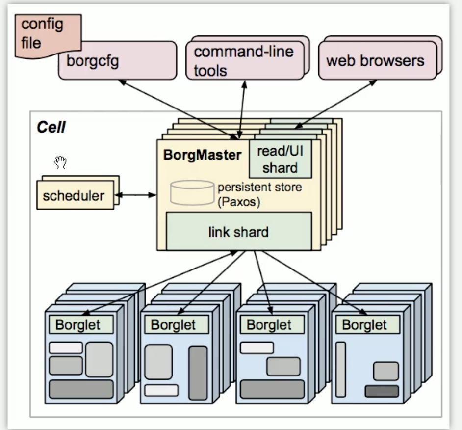
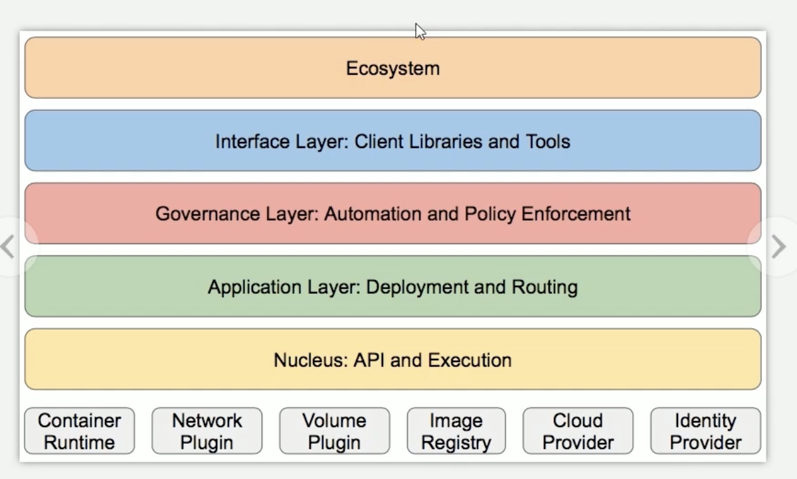
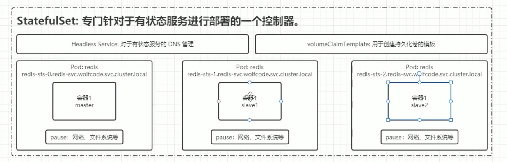

K8S
本文最后更新于：16 分钟前
k8s
一 、应用部署三大阶段


传统部署：环境不隔离
虚拟化部署：环境过度隔离，每个虚拟机内部又要重新装一个操作系统。
容器部署：容器内部没有硬件设备模拟，很好解决了以上两个问题 ，容器的启动效率更高
一些问题：
传统部署方式ip会很稳定，容器化部署中容器相当于一个壳子 ，意味着容器的生命周期很短。当容器删除时文件系统网络等都会改变，从而会影响一些服务。这些问题k8s都能够解决。
K8s的特点
自我修复
自动检测容器是否发生错误，若出现错误会基于原来的容器重新copy一个出来
弹性伸缩
自动基于原来的容器进行扩容
自动部署和回滚
挨个更新，保证无论如何都有一个容器可用，用户不会感知这次更新
服务发现与负载均衡
机密和配置管理
存储编排
把所有机器的存储资源管理成虚拟磁盘 ，容器访问虚拟磁盘，最后被映射成物理磁盘。
二、集群架构与组件
Borg架构
主从调度。Borglet是从节点，BrogMaster去协调各个节点。
K8s架构

注：
- 节点分为主节点和从节点，只有从节点才部署对应的任务，主节点可以既作为主节点也可以作为从节点。
- 所有的操作有一个汇聚一点api-server，维护所有api功能。
- 我们使用命令行进行操作，对k8s来说都是http请求。命令行都是操作api的。
相关组件
通过UI或者命令行调用APi来操作master
kubectl命令行工具
Dashboad可视化界面UI
控制面板组件（Master）

api-server
接口服务：基于REST开放k8s接口服务
controller-manager
控制管理器：负责运行控制器进程，每个控制器都是一个单独的进程，但是为了降低复杂性，他们都被编译到同一个可执行文件，并在同一个进程中运行管理各个类型的控制器。实现节点控制，任务控制，端点分片，服务账号控制。针对k8s中各种资源进行管理。
cloud-controller-manager
云控制器管理器：第三方云平台提供的控制器API对接管理功能
kube-scheduler
调度器：负责将Pod基于一定算法，将其调用到合适的节点上。
etcd
理解为k8s的数据库，键值类型存储的分布式数据库，提供基于Raft算法实现自主的集群高可用。老版本：基于内存。新版本。
普通节点

kubelet
负责Pod生命周期、存储、网络。
kube-proxy
网络代理，负责Service的服务发展。负载均衡（4层负载）
pod
一个可运行多个容器
container-runtime
容器运行时环境：docker、containerd、CRI-O
注：所有节点都依赖于API-Server，最终操作会落到Pod上面。
三、核心概念与专业术语
有状态与无状态

无状态：
代表应用：Nginx，Apache
优点：对客户端透明，可以高效试下你扩容、迁移。
缺点：不能存储数据，需要额外的数据服务支持
资源和对象
k8s中所有内容都被抽象为‘资源’，如Pod、Service、Node等都是资源。“对象”就是“资源”的实例，是持久化的实体 如某个Pod、某个具体的Node，k8s使用这些实体去表示集群状态，对象的创建、删除、修改都是通过k8s api来进行操作。
资源的分类

元数据
对资源的元数据描述，每一个资源都可以使用元空间的数据
集群
集群级别的资源作用与集群之上，集群下所有资源可以享用。
命名空间
命名空间级别的资源，作用在命名空间之上，通常只能在该命名空间范围内使用
元数据类型级
Hori zontal Pod Autoscaler
Pod自动扩容，可以根据CPU使用率自定义指标自动对Pod进行扩容和缩容
PodTemplate
LimiteRange
可以对集群内Request和Limits的配置做一个全局的限制，相当于批量设置了某一范围内（某个命名空间）的Pod的资源使用限制
集群级
Namespace
Node（相当于一个服务器）
不像其他的资源如（Pod个Namespace），Node本质上不是K8s来创建的，K8s只是管理Bode上的资源，虽然可以通过Mainfest创建一个Node对象但K8s也只是去检查是否是有3这么一个Node，如果检查失败，也不会向上调度Pod
ClusterRole
用于对集群权限进行管理
ClusterRoleBingding
让资源与权限进行绑定
命名空间级
1. 工作负载级
Pod

Pod（容器组）是K8s中最小的可部署单元，一个Pod（容器组）包含了一个应用程序容器（某些情况下是多个容器）、存储资源，一个唯一的网络ip地址，以及一些确定容器该如何运行的选项，Pod容器组代表了k8s中一个独立的应用程序运行实力，该实例可能由单个或几个紧耦合在一起的容器组成。

通过pause容器来实现 pod内部多个容器对网络文件系统的共享
一个pod内有相同的网络空间，相同的进程名，相同的主机名。*
1. Pod副本
引入‘副本’的概念——一个Pod可以被复制成多分，每一份被称之为一个“副本”，这些“副本”除了一些描述的信息（Pod的名字、uid等）不一样意外，其他信息都是一样的，譬如Pod内部的容器，容器数量，容器里面运行的应用等，这些信息都是一样的，这些副本提供同样的功能。
2. Pod控制器
Pod的”控制器“通常包含一个名为”replicas“的属性，”replicas“属性则指定了特定Pod的副本数量，当集群中该Pod的数量与该属性置顶的值不一致时，k8s会采用一些策略去使得当前状态满足配置的要求。每个控制器都是一个pod对象。控制器管理着pod，管理pod怎么去创建，控制器不止一种。
***控制器分类***：

a. 适用无状态服务：
Replication Controller(RC):
帮助我们动态更新Pod副本数。基于原本模版创建，根据Rplace，需要与Pod进行绑定
Replica Set（RS）:
帮助我们动态更新Pod的副本书，可以通过selector来选择对哪些pod生效
Delopyment：
RC，RS只有扩容和缩容，针对RS的更高层次的封装，提供了更丰富的部署相关的功能。
不用描述RS，可以直接创建Replica Set/Pod
滚动升级/回滚

滚动升级会更根据RS1创建一个RS2，升级RS2里面的Pod再依此替换老旧的版本，不用将应用全部停掉。同时不删除旧版本保证可以回滚。
平滑扩容和缩容
暂停与恢复
b. 适用于有状态服务
statefulset
提供给稳定的持久化存储，稳定的网络标志，由徐部署，有序扩展，有收缩，有序删除。
组成：（1）Headless Service：用于定义网络标志（Domain Name Service）Domain name server：域名服务，将域名与ip绑定映射关系，使用服务名来当域名，会自动绑定一个地址（2）volumeClaimTemplate。
c. 守护进程

DaemonSet保证在每个Node上运行一个容器副本，常用来部署一些集群的日志、监控或者其他管理应用，典型的应用包括：
日志收集：比如fluentd ，logstash等
系统监控，比如 Prometheus Node Exporter
系统程序，比如kube-proxy，kube-dns等
注：以上三种控制器会持续运行，出错会重新运行。
d. 任务/定时任务
- job：一次性运行的任务，运行完成后Pod销毁，不再重新启动新容器
- Cronjob:周期性执行的任务
2. 服务发现


- Service ：k8s集群内部的网络通信 ，解决横向流量东西流量的问题
- Ingress：实现将K8s内部服务暴露给外网络访问的服务，ingress-nigx 反向代理，负载均衡（七层负载）解决纵向流量南北流量
3.存储
Volume 数据卷，共享Pod中容器使用的数据，用来持久化的数据，比如数据库数据。
CSI：容器标准化接口。方便使用插件
4. 配置
- ConfigMap 存储key-value，把configMap加载到容器里方便容器使用这些参数，这样将参数分离出来方便修改。
- Secret 加密
- DownwardAPI 把Pod的信息共享到容器里。可以通过环境变量或volume挂载的方式
5. 其他
- Role:定义一组命名空间的权限
- RoleBinding
对象规约和状态
Spec是规约，规格的意思，spec是必须的，他描述了对象期望状态（Desired State）———希望对象所具有的特征，当创建Kubernates对象时，必须提供对象的规约，用来描述对象的期望状态。
**状态 **：表示对象的实际状态，该属性由k8s自己维护，k8s会通过一系列的控制器对对应对象进行管理，让对象尽可能地让实际状态与期望状态重合。
k8s集群搭建
| 角色 | IP地址 | 实验画环境 |
|---|---|---|
| Master | 192.168.2.131 | Cenos8.4 |
| Node1 | 192.168.2.130 | Centos8.4 |
| Node2 | 192.168.2.132 | Centos8.4 |
…….